Haze
Autor:
Łukasz Stefaniak www
Opis:
Program ten powstał w 2003 roku jako pierwszy mój program w C++
oraz OpenGL. Jego jakość pozostawia wiele do życzenia w tym momencie.
Projekt ten ewoluował później razem z ewolucją mojego programowania i
okazał się dobrym sposobem nauki. Nowszej wersji nie mogłem znaleźć więc
ulepszyłem tylko tą pierwszą i oto ona.
Screenshots:
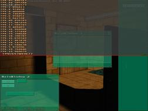
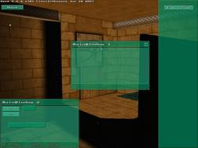
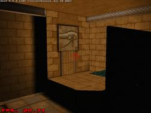
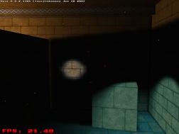
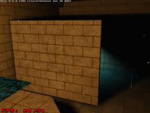
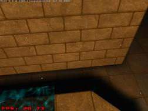
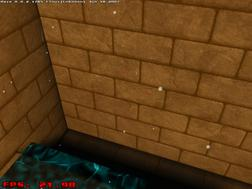
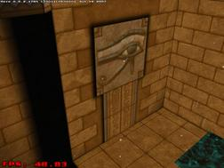
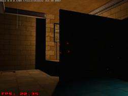
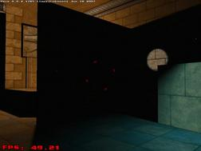
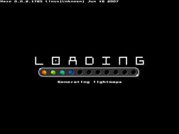
Features:
- działanie na wielu platformach systemowych - z faktu użycia
cmake oraz opengl powinno być możliwe skompilowanie i uruchomienie tego
programu na prawie każdej platformie
- parser plików map z half-life - tekstowy plik opisujący
kształt geometrii i oteksturowania poprzez zapis informacji o
płaszczyznach tworzących bryłę
- generator geometrii - zamiana opisu płaszczyznowego na
poligonowy, sortowanie wierzchołków, generacja współrzędnych tekstur
- generator oświetlenia - generator oświetlenia przy użyciu
techniki lightmappingu, różne typy świateł i możliwość definiowania
parametrów, cienie poprzez ray-casting
- obsługa języka GLSL umożliwiająca oprogramowanie
zaawansowanych efektów graficznych
- systemy cząsteczkowe - zaimplementowana obsługa pocisków,
deszczu i śniegu
- obsługa GUI - własna biblioteka o prostej budowie
Wymagania:
- karta obsługująca GLSL tzn. OpenGL 2.0
- reszta wymagań sprzętowych trudna do ocenienia, aby się
przynajmniej uruchomiło nie potrzeba chyba nic więcej
- w archiwum znajduje się blik wykonywalny dla
amd64(ubuntu6.10.1)
Wymagania dla kompilacji:
- cmake - najnowsza wersja - libpng-dev - libGLEW-dev -
libSDL-dev
- kompilatory i inne temu podobne rzeczy - jeśli udało się
skompilować cmake i glew ze źródeł, to reszta powinna pójść (zalecany
gcc4.1, kiedyś kompilowałem na mingw3.3)
Kompilacja:
Wchodzimy do katalogu build i wydajemy polecenie
cmake .. następnie make Po skończonej kompilacji wchodzimy do
głównego katalogu(bardzo istotne! musimy być w głównym katalogu podczas
uruchamiania) i wydajemy polecenie np. ./bin/haze
Prawa autorskie:
Cały kod jest mojego autorstwa, chyba, że jest inaczej. Jeśli
jakaś część nie jest mojego autorstwa(np. biblioteka matematyczna) to
jest to wyszczególnione. A jeżeli nie jest wyszczególnione, to zupełnie nie specjalnie.
Program dostępny na zasadach GPLv2.
Użyte grafiki są nieznanego mi w tej chwili pochodzenia -
nie jestem ich autorem. Ich jakiekolwiek użycie komercyjne jest
prawdopodobnie zabronione.
{kind=link}
{kind=link}
{kind=link}
{kind=link}
{kind=link}
{kind=link}
{kind=link}
{kind=link}
{kind=link}
{kind=link}
{kind=link}